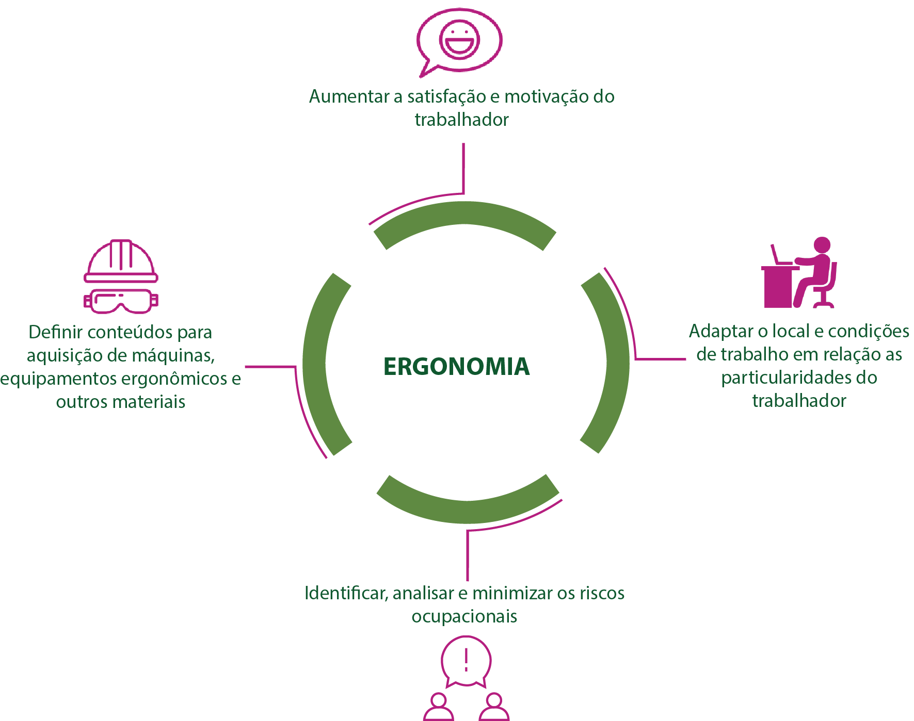

A 4ª revolução industrial, chamada de 4.0, é a revolução que estamos vivenciando atualmente e que muitas vezes ainda nem percebemos, pois estamos convivendo com a internet das coisas, impressão 3D, alta engenharia genética e inteligência artificial, robótica e até, máquinas que “aprendem”. Mas não se assustem, esse é o contexto que resume o que está acontecendo com a sociedade e nas empresas. Então, perguntamos: Como todas essas modernidades tecnológicas podem afetar ou não a nossa saúde mental?
Devido a diversos fatores de risco causadas por toda essa era tecnológica, pode ocorrer também, o adoecimento físico e mental do trabalhador. Muitos trabalhadores já sentem a chegada dessa era tecnológica e reclamam das máquinas estarem tirando seus postos de trabalho, e segundo as pesquisas, aumentando a lacuna de gêneros, que é a diferença de empregos entre homens e mulheres. Esse é o lado ruim da 4ª revolução industrial, o sentimento de perda e de não ter um conhecimento necessário para acompanhar todo esse avanço, podendo afetar a saúde mental do colaborador.
Contudo, as empresas precisam estar preparadas para dar suporte e apoio emocional perante o surgimento de tais casos, oferecendo métodos de capacitar o colaborador para diminuir o impacto dessa 4ª revolução industrial. Diante esse contexto, muitos trabalhadores não estão entristecendo ao ponto de adoecer, pelo contrário, estão procurando se capacitar, fazerem cursos de educação a distância (EAD) com a busca de um conhecimento necessário para poderem trabalhar com mais segurança.
Além do conhecimento adquirido, a chegada da revolução 4.0 nas empresas, faz com que os trabalhadores tenham a função de operacionar bem as máquinas, exigindo menos trabalho braçal e repetitivo; garantindo assim, mais tempo para se relacionar com os colegas de trabalho e com a família, cuidar da sua saúde e mostrar o que as máquinas nunca serão capazes de fazer que é gerenciar as emoções e a criatividade, afinal de contas, as máquinas funcionam mediante o controle de um operador.
